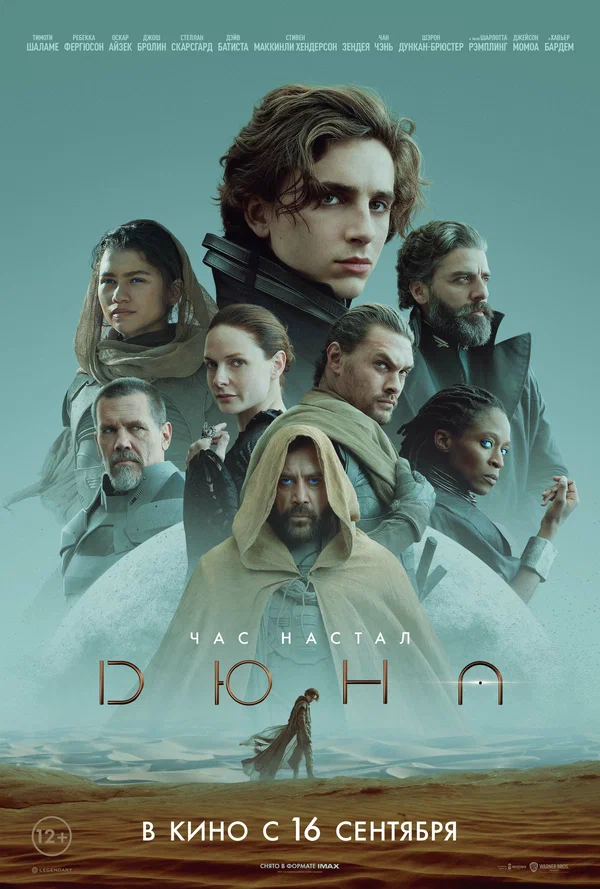
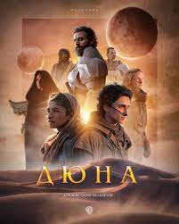
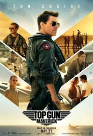
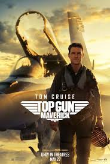
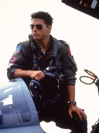
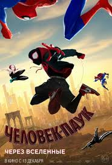
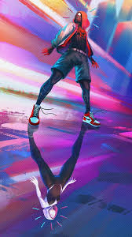
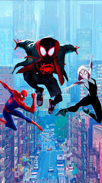

Любимые фильмы
Список фильмов
1. Дюна
 Эпическая адаптация романа Фрэнка Герберта, рассказывающая о борьбе за контроль над планетой Арракис.
| Год | Страна | Жанр | Режиссер |
|---|---|---|---|
| 2021 | США | Научная фантастика | Дени Вильнев |
2. Топ Ган: Maverick
  Возвращение Пита "Маверика" Митчелла, который становится наставником нового поколения пилотов.
| Год | Страна | Жанр | Режиссер |
|---|---|---|---|
| 2022 | США | Экшн | Джозеф Косински |
3. Человек-паук: Через вселенные
  Анимационный фильм, который продолжает приключения Майлза Моралес в мультивселенной супергероев.
| Год | Страна | Жанр | Режиссер |
|---|---|---|---|
| 2018 | США | Анимация | Боб Персичетти, Питер Рэмси, Родни Ротман |